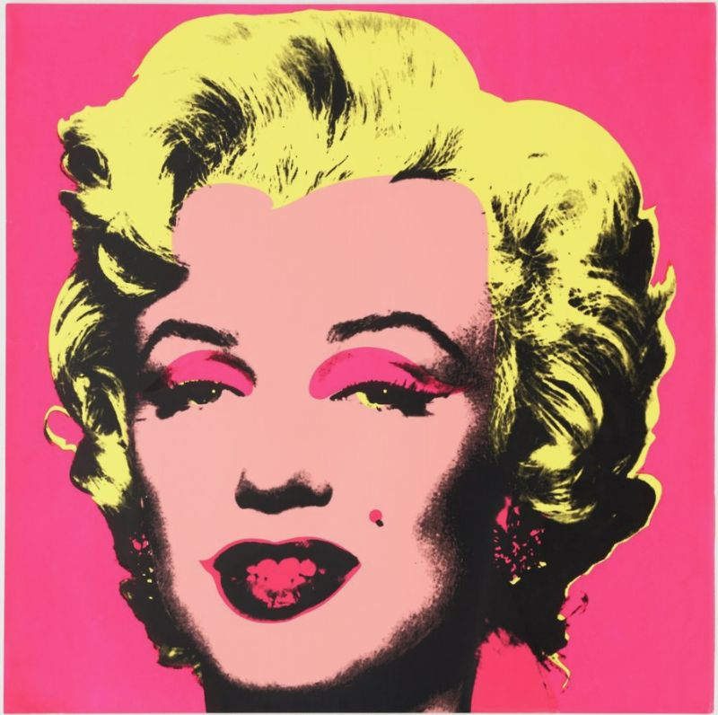
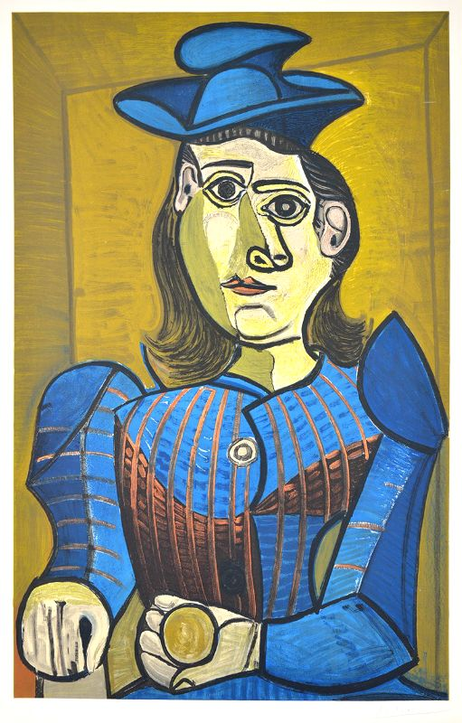
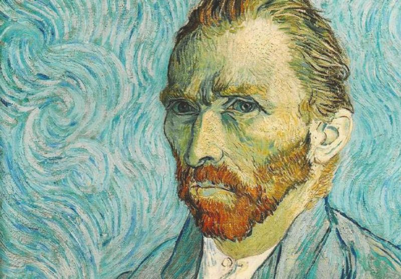
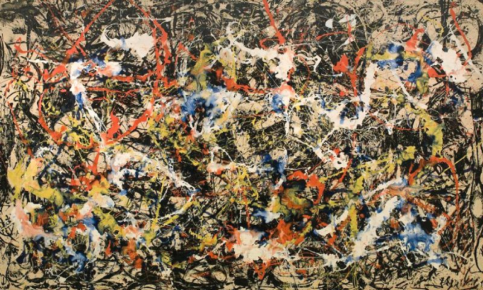
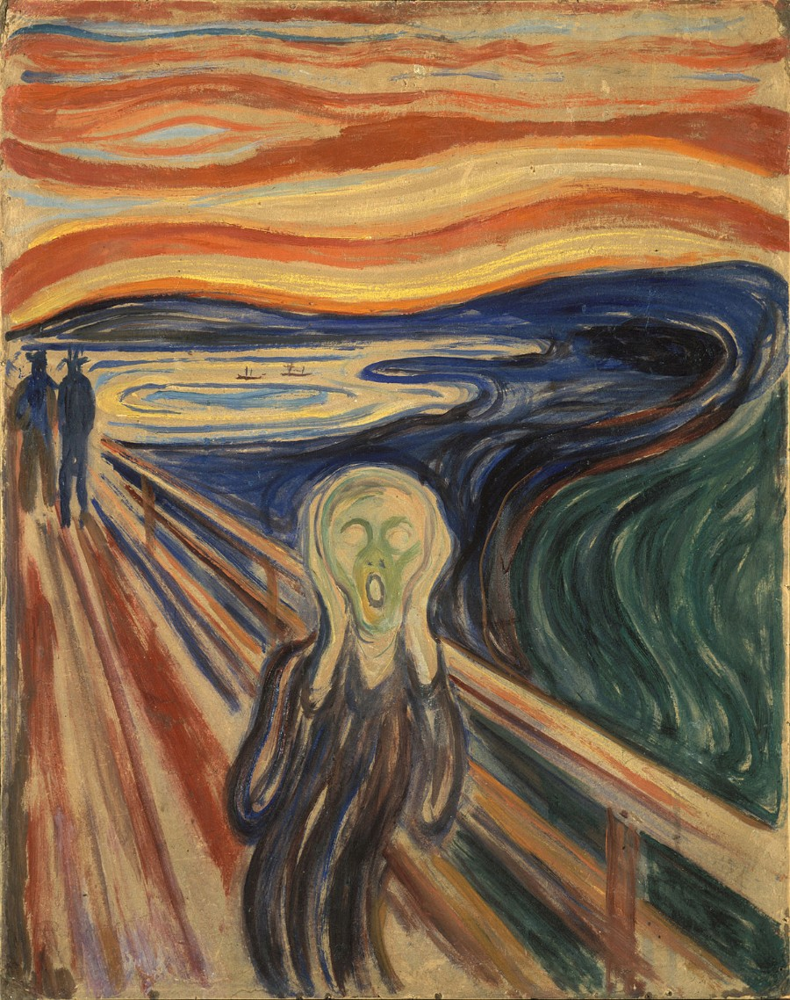
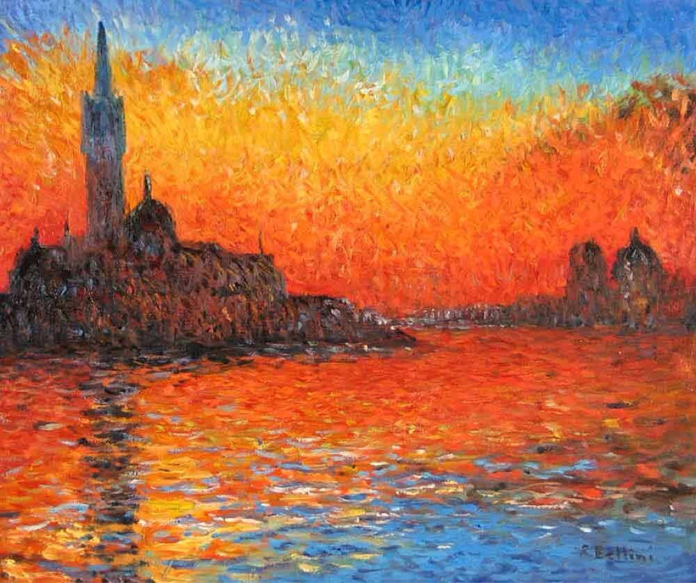
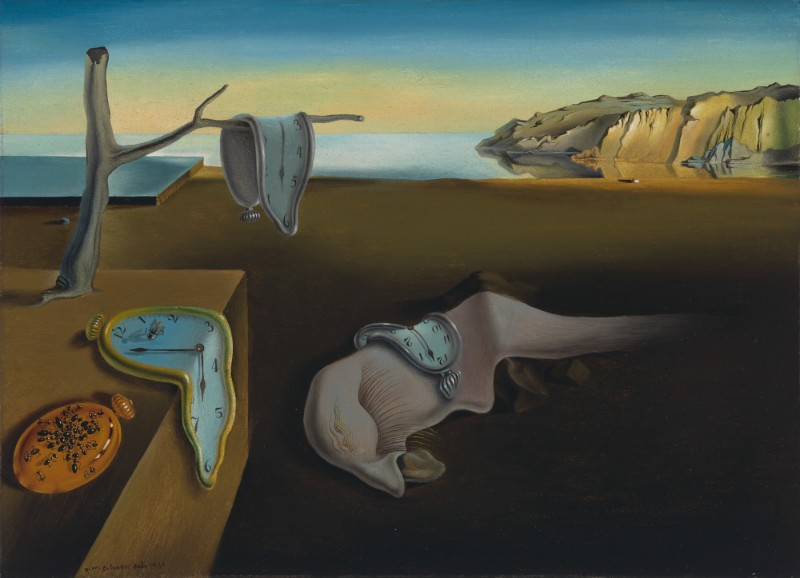
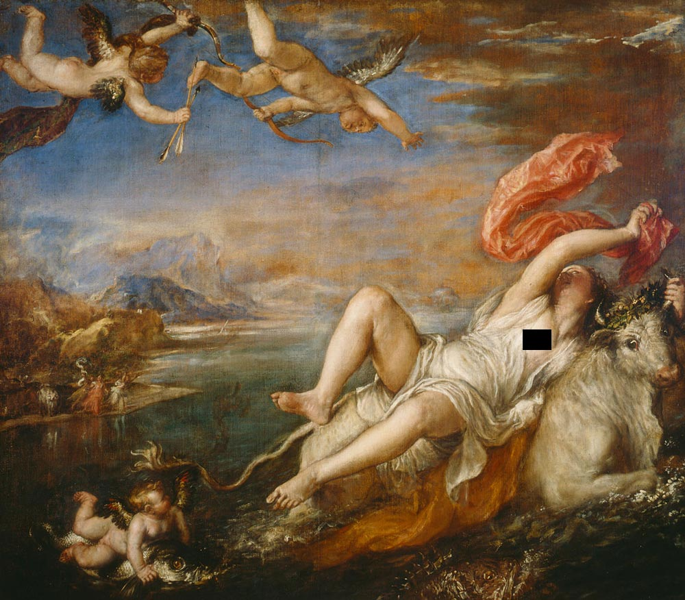
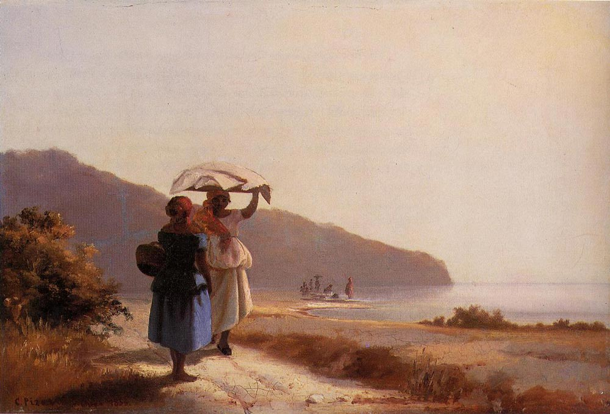

Unlike films, art isn't something everybody understands. So it takes a lot for an artist to really disclose in the public mind and acquire credit for being brilliant.
Beginning out as a commercial artist, he brought the ethos of promotion into fine art, even going so far as to say, “Making money is art.” Such attitudes blew away the existential declarations of Abstract Expressionism. Although he’s recognized for captions such as Campbell’s Soup, Marilyn Monroe, and Elvis Presley, his greatest invention was himself.
Pablo Picasso is implicitly synonymous with modern art, and it doesn’t hurt that he fits the generally held image of the fugitive genius whose goals are balanced by a taste for living big. He turned the field of art history with radical innovations that include college andCubism, which destroyed the stranglehold of representational material matter on art, and set the rate for other 20th-century artists.
Van Gogh is known for being psychologically unstable, but his arts are among the most popular and most famous artists of all time. Van Gogh’s technique of painting with flurries of thick brushstrowing and dropping thin skeins of pigment that left behind a solid record of his movements.
Hindered by addiction, self-doubt, and awkwardness as a conventional painter,Pollock transformed his faults in a short but intense period between 1947 and 1950 when he performed the drip ideas that connected his fame. Avoiding the easel to lay his paintings flat on the floor, he used house paint right from the can, throwing and dropping thin skeins of pigment that left behind a solid record of his movements.
I scream you scream we all scream for Munch’s The Scream, the Mona Lisa of anxiety. In 2012, a pastel variant of Edvard Munch’s iconic invocation of modern anxiety got a then-astronomical price of $120 million at auction. Munch’s career was more than just a single painting.
Perhaps the most famous artists amidst the Impressionists, Monet conquered the varying influences of light on the panorama by bright shards of colour produced as quickly painted strokes. Furthermore, his many thoughts of haystacks and other subjects anticipated the use of serial comparison in Pop Artand Minimalism.
Dalí was effectively Warhol before there was a Warhol. Like Andy, Dalí courted celebrity almost as an adjunct to his work. With their melting watches and eerie blasted landscapes, Dalí’s paintings were the epitome of Surrealism, and he cultivated an equally outlandish appearance, wearing a long waxed moustache that resembled cat whiskers. Ever the consummate showman, Dalí once declared, “I am not strange. I am just not normal.”
 Sandro Botticelli is among the greatest Renaissance painters. His first known, completed work is Fortitude, which is currently held in the Galleria degli Uffizi, in Florence.
Properly known as the “Allegory of Fortitude,” the painting personifies the virtue of in the form of a young woman sitting upon a thrown and holding a scepter as she gazes pensively to the right (her left). The painting is believed to have been completed in 1470.
The Rape of Europa was painted by Tiziano Vecillio sometime during the period of 1559 to 1562 for the King of Spain Phillip II. It was certainly one of the most jovial of his poetic works. The painting depicts a completely surprised Europa arms and legs flailing as she is carried away on Jupiter’s back as he is disguised as an ornamented white bull while a little chubby and nude boy riding the back of a dolphin appears to be mocking her. Meanwhile in the sky are cupids follow the happy scene. The clear blue sky combined with a stormy sky is the Venetian’s subtle hint of conflict taking place between the two lovers. Europa is portrayed as demure and resistant, weak with desire and frightened beneath a contrasting sky of opposites both calm and turbulent. Cupids one below and two above are transfixed as they watch the tension between Europa and Jupiter.
The painting shows two ladies standing on a pathway beside an almost deserted beach. In the background, there are five figures on a raft on the shoreline. One of the women, wearing a white dress, is facing towards the view. The other woman, in a bright blue dress, has her back to the viewer.The woman in white has a large covered basket on her head, which she is holding with her left hand. She is clutching a bundle in her right hand. The woman in blue carries a basket over her left arm.
{kind=link}
{kind=link}
{kind=link}
{kind=link}
{kind=link}
{kind=link}
{kind=link}
{kind=link}
{kind=link}
{kind=link}